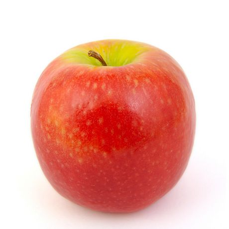
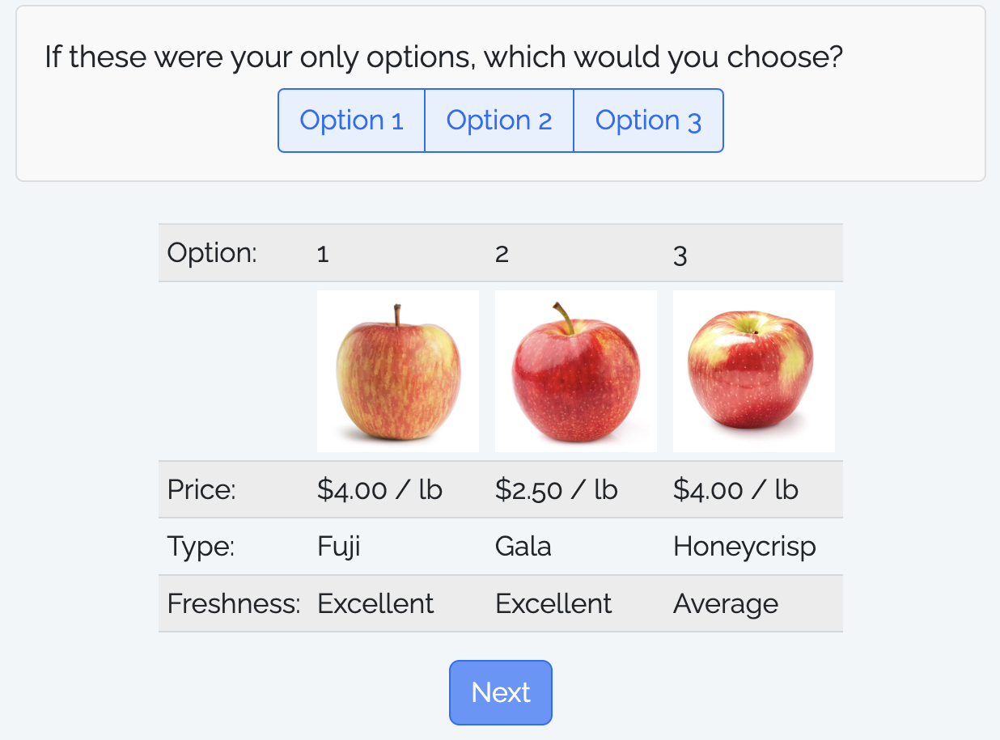

Some Quarto tips
Convert a data frame to a markdown table with kable()
| mpg | cyl | disp | hp | drat | wt | qsec | vs | am | gear | carb | |
|---|---|---|---|---|---|---|---|---|---|---|---|
| Mazda RX4 | 21.0 | 6 | 160.0 | 110 | 3.90 | 2.620 | 16.46 | 0 | 1 | 4 | 4 |
| Mazda RX4 Wag | 21.0 | 6 | 160.0 | 110 | 3.90 | 2.875 | 17.02 | 0 | 1 | 4 | 4 |
| Datsun 710 | 22.8 | 4 | 108.0 | 93 | 3.85 | 2.320 | 18.61 | 1 | 1 | 4 | 1 |
| Hornet 4 Drive | 21.4 | 6 | 258.0 | 110 | 3.08 | 3.215 | 19.44 | 1 | 0 | 3 | 1 |
| Hornet Sportabout | 18.7 | 8 | 360.0 | 175 | 3.15 | 3.440 | 17.02 | 0 | 0 | 3 | 2 |
| Valiant | 18.1 | 6 | 225.0 | 105 | 2.76 | 3.460 | 20.22 | 1 | 0 | 3 | 1 |
| Duster 360 | 14.3 | 8 | 360.0 | 245 | 3.21 | 3.570 | 15.84 | 0 | 0 | 3 | 4 |
| Merc 240D | 24.4 | 4 | 146.7 | 62 | 3.69 | 3.190 | 20.00 | 1 | 0 | 4 | 2 |
| Merc 230 | 22.8 | 4 | 140.8 | 95 | 3.92 | 3.150 | 22.90 | 1 | 0 | 4 | 2 |
| Merc 280 | 19.2 | 6 | 167.6 | 123 | 3.92 | 3.440 | 18.30 | 1 | 0 | 4 | 4 |
| Merc 280C | 17.8 | 6 | 167.6 | 123 | 3.92 | 3.440 | 18.90 | 1 | 0 | 4 | 4 |
| Merc 450SE | 16.4 | 8 | 275.8 | 180 | 3.07 | 4.070 | 17.40 | 0 | 0 | 3 | 3 |
| Merc 450SL | 17.3 | 8 | 275.8 | 180 | 3.07 | 3.730 | 17.60 | 0 | 0 | 3 | 3 |
| Merc 450SLC | 15.2 | 8 | 275.8 | 180 | 3.07 | 3.780 | 18.00 | 0 | 0 | 3 | 3 |
| Cadillac Fleetwood | 10.4 | 8 | 472.0 | 205 | 2.93 | 5.250 | 17.98 | 0 | 0 | 3 | 4 |
| Lincoln Continental | 10.4 | 8 | 460.0 | 215 | 3.00 | 5.424 | 17.82 | 0 | 0 | 3 | 4 |
| Chrysler Imperial | 14.7 | 8 | 440.0 | 230 | 3.23 | 5.345 | 17.42 | 0 | 0 | 3 | 4 |
| Fiat 128 | 32.4 | 4 | 78.7 | 66 | 4.08 | 2.200 | 19.47 | 1 | 1 | 4 | 1 |
| Honda Civic | 30.4 | 4 | 75.7 | 52 | 4.93 | 1.615 | 18.52 | 1 | 1 | 4 | 2 |
| Toyota Corolla | 33.9 | 4 | 71.1 | 65 | 4.22 | 1.835 | 19.90 | 1 | 1 | 4 | 1 |
| Toyota Corona | 21.5 | 4 | 120.1 | 97 | 3.70 | 2.465 | 20.01 | 1 | 0 | 3 | 1 |
| Dodge Challenger | 15.5 | 8 | 318.0 | 150 | 2.76 | 3.520 | 16.87 | 0 | 0 | 3 | 2 |
| AMC Javelin | 15.2 | 8 | 304.0 | 150 | 3.15 | 3.435 | 17.30 | 0 | 0 | 3 | 2 |
| Camaro Z28 | 13.3 | 8 | 350.0 | 245 | 3.73 | 3.840 | 15.41 | 0 | 0 | 3 | 4 |
| Pontiac Firebird | 19.2 | 8 | 400.0 | 175 | 3.08 | 3.845 | 17.05 | 0 | 0 | 3 | 2 |
| Fiat X1-9 | 27.3 | 4 | 79.0 | 66 | 4.08 | 1.935 | 18.90 | 1 | 1 | 4 | 1 |
| Porsche 914-2 | 26.0 | 4 | 120.3 | 91 | 4.43 | 2.140 | 16.70 | 0 | 1 | 5 | 2 |
| Lotus Europa | 30.4 | 4 | 95.1 | 113 | 3.77 | 1.513 | 16.90 | 1 | 1 | 5 | 2 |
| Ford Pantera L | 15.8 | 8 | 351.0 | 264 | 4.22 | 3.170 | 14.50 | 0 | 1 | 5 | 4 |
| Ferrari Dino | 19.7 | 6 | 145.0 | 175 | 3.62 | 2.770 | 15.50 | 0 | 1 | 5 | 6 |
| Maserati Bora | 15.0 | 8 | 301.0 | 335 | 3.54 | 3.570 | 14.60 | 0 | 1 | 5 | 8 |
| Volvo 142E | 21.4 | 4 | 121.0 | 109 | 4.11 | 2.780 | 18.60 | 1 | 1 | 4 | 2 |
Example from last year
| brand | volumeInOz | quantity | price | pricePerCup | biodegrability | opacity | logo |
|---|---|---|---|---|---|---|---|
| greatValue | 9 | 50 | $2.98 | $0.06 | FALSE | TRUE | FALSE |
| decorRack | 9 | 50 | $5.99 | $0.12 | FALSE | TRUE | FALSE |
| tigerChef | 9 | 100 | $7.99 | $0.08 | FALSE | TRUE | FALSE |
| smartly | 9 | 80 | $2.79 | $0.03 | FALSE | FALSE | FALSE |
| solo | 9 | 50 | $4.04 | $0.08 | FALSE | FALSE | FALSE |
| greatValue | 9 | 100 | $3.76 | $0.04 | FALSE | FALSE | FALSE |
| ecoProducts | 9 | 1000 | $187.69 | $0.19 | TRUE | FALSE | TRUE |
| worldCentric | 9 | 2000 | $220.00 | $0.11 | TRUE | FALSE | TRUE |
| hefty | 18 | 50 | $3.98 | $0.08 | FALSE | TRUE | FALSE |
| solo | 18 | 50 | $3.98 | $0.08 | FALSE | TRUE | FALSE |
| greatValue | 18 | 120 | $5.98 | $0.05 | FALSE | TRUE | FALSE |
| upAndUp | 18 | 36 | $2.49 | $0.07 | FALSE | TRUE | FALSE |
| greatValue | 16 | 25 | $1.98 | $0.08 | FALSE | FALSE | FALSE |
| solo | 18 | 25 | $3.05 | $0.12 | FALSE | FALSE | FALSE |
| upAndUp | 18 | 28 | $2.99 | $0.11 | FALSE | FALSE | FALSE |
| worldCentric | 16 | 1000 | $181.00 | $0.18 | TRUE | FALSE | TRUE |
| ecoProducts | 16 | 1000 | $279.85 | $0.28 | TRUE | FALSE | TRUE |
More kable() formatting options:
{kableExtra} package
References
Simple approach: Insert a footnote with ^[]
The Eiffel Tower is 324 meters tall^[From the [Eiffel Tower wikipedia page](https://en.wikipedia.org/wiki/Eiffel_Tower)]
References
Complex (but more complete) approach: Use bibtex
https://quarto.org/docs/authoring/footnotes-and-citations.html
You can insert citations with [@citekey], and a “References” table will be automatically created.
Footnotes are perfectly fine for this class
Week 7: Conjoint Questions
1. Defining choice questions in R
2. Displaying choice questions in surveydown
Week 7: Conjoint Questions
1. Defining choice questions in R
2. Displaying choice questions in surveydown
Download & unzip:
- logitr-cars
- today’s practice notes (2 survey templates)
Open the logitr-cars folder in Positron
We’ll be using the {cbcTools} package today
Install with:
Choice question components
1. Generate profiles for each attribute and level
2. Create a survey design data frame from profiles
Basic Design
Any combination of attributes can be shown in each choice question
| Option: | 1 | 2 | 3 |
| Price: | $15 | $25 | $25 |
| Fuel Economy: | 25 (mpg) | 25 (mpg) | 25 (mpg) |
| Accel. Time: | 6 (s) | 7 (s) | 8 (s) |
| Powertrain: | Electric | Gasoline | Electric |
| Option: | 1 | 2 | 3 |
| Price: | $20 | $25 | $25 |
| Fuel Economy: | 25 (mpg) | 20 (mpg) | 25 (mpg) |
| Accel. Time: | 7 (s) | 6 (s) | 7 (s) |
| Powertrain: | Gasoline | Gasoline | Electric |
Labeled Design
One attribute is used as the “label” - choice options are fixed according to the label
| Option: | Gasoline | Electric |
| Price: | $20 | $25 |
| Fuel Economy: | 20 (mpg) | 25 (mpg) |
| Accel. Time: | 8 (s) | 8 (s) |
| Option: | Gasoline | Electric |
| Price: | $20 | $25 |
| Fuel Economy: | 20 (mpg) | 20 (mpg) |
| Accel. Time: | 6 (s) | 8 (s) |
Design with a “None” option
A “none” option means they can choose an “other” option
| Option: | 1 | 2 | 3 | None |
| Price: | $15 | $20 | $15 | |
| Fuel Economy: | 25 (mpg) | 25 (mpg) | 30 (mpg) | |
| Accel. Time: | 8 (s) | 8 (s) | 7 (s) | |
| Powertrain: | 1 | 1 | 1 |
| Option: | 1 | 2 | 3 | None |
| Price: | $15 | $15 | $25 | |
| Fuel Economy: | 25 (mpg) | 30 (mpg) | 30 (mpg) | |
| Accel. Time: | 6 (s) | 8 (s) | 6 (s) | |
| Powertrain: | 1 | 2 | 2 |
Attribute-specific features
Some attributes may only be valid for certain levels of other attributes
Example: The driving range of an electric vehicle (EV) only applies to EVs and not gasoline-powered vehicles.
To implement this, you may need to add restrictions to your profiles with cbc_restrict()
(see logitr-cars code 1.2)
Warning: Restrictions can lead to imbalances
Use balance_by in cbc_design() to fix imbalances
(see logitr-cars code 1.2)
Your Turn
Open the “conjoint_buttons” template folder in Positron
With your team, discuss the specific choice question design for your project
- Regular or labeled?
- Include a “none” option (outside good) or not?
- Include restrictions?
Then edit the make-choice-questions.R file to design your choice questions.
Week 7: Conjoint Questions
1. Defining choice questions in R
2. Displaying choice questions in surveydown
Displaying choice questions in your survey
1. Read in the design file (choice_questions.csv)
2. Sample and store a random respondent ID
3. Filter the design for the respondentID
4. Define a function to create question options
5. Create the options for each choice question
6. Create each choice question (6 in total)
1. Read in the design file (choice_questions.csv)
2. Sample and store a random respondent ID
Sample a random respondentID
Store the respondentID
In your survey data, you will have a respID column
3. Filter the design for the respondentID
Images are stored in "images" folder, so we paste on that path
Result looks like this:
#> # A tibble: 6 × 9
#> profileID respID qID altID obsID type price freshness image
#> <dbl> <dbl> <dbl> <dbl> <dbl> <chr> <dbl> <chr> <chr>
#> 1 29 399 1 1 2389 Pink Lady 3.5 Excellent images/pinkLady.jpg
#> 2 68 399 1 2 2389 Honeycrisp 4 Average images/honeycrisp.jpg
#> 3 17 399 1 3 2389 Gala 2.5 Excellent images/gala.jpg
#> 4 33 399 2 1 2390 Honeycrisp 4 Excellent images/honeycrisp.jpg
#> 5 69 399 2 2 2390 Pink Lady 4 Average images/pinkLady.jpg
#> 6 45 399 2 3 2390 Red Delicious 1.5 Average images/redDelicious.jpgmake_cbc_options <- function(df) {
alt1 <- df |> filter(altID == 1)
alt2 <- df |> filter(altID == 2)
alt3 <- df |> filter(altID == 3)
options <- c("option_1", "option_2", "option_3")
names(options) <- c(
glue(
"
**Option 1**<br>
<img src='{alt1$image}' width=100><br>
**Type**: {alt1$type}<br>
**Price**: $ {alt1$price} / lb
"
),
glue(
"
**Option 2**<br>
<img src='{alt2$image}' width=100><br>
**Type**: {alt2$type}<br>
**Price**: $ {alt2$price} / lb
"
),
glue(
"
**Option 3**<br>
<img src='{alt3$image}' width=100><br>
**Type**: {alt3$type}<br>
**Price**: $ {alt3$price} / lb
"
)
)
return(options)
}Make one-row data frames for each alternative.
For example, alt1 looks like this:
#> Rows: 1
#> Columns: 9
#> $ profileID <dbl> 29
#> $ respID <dbl> 399
#> $ qID <dbl> 1
#> $ altID <dbl> 1
#> $ obsID <dbl> 2389
#> $ type <chr> "Pink Lady"
#> $ price <dbl> 3.5
#> $ freshness <chr> "Excellent"
#> $ image <chr> "images/pinkLady.jpg"make_cbc_options <- function(df) {
alt1 <- df |> filter(altID == 1)
alt2 <- df |> filter(altID == 2)
alt3 <- df |> filter(altID == 3)
options <- c("option_1", "option_2", "option_3")
names(options) <- c(
glue(
"
**Option 1**<br>
<img src='{alt1$image}' width=100><br>
**Type**: {alt1$type}<br>
**Price**: $ {alt1$price} / lb
"
),
glue(
"
**Option 2**<br>
<img src='{alt2$image}' width=100><br>
**Type**: {alt2$type}<br>
**Price**: $ {alt2$price} / lb
"
),
glue(
"
**Option 3**<br>
<img src='{alt3$image}' width=100><br>
**Type**: {alt3$type}<br>
**Price**: $ {alt3$price} / lb
"
)
)
return(options)
}Renders as:
#> **Option 1**<br>
#> <img src='images/pinkLady.jpg' width=100><br>
#> **Type**: Pink Lady<br>
#> **Price**: $ 3.5 / lbmake_cbc_options <- function(df) {
alt1 <- df |> filter(altID == 1)
alt2 <- df |> filter(altID == 2)
alt3 <- df |> filter(altID == 3)
options <- c("option_1", "option_2", "option_3")
names(options) <- c(
glue(
"
**Option 1**<br>
<img src='{alt1$image}' width=100><br>
**Type**: {alt1$type}<br>
**Price**: $ {alt1$price} / lb
"
),
glue(
"
**Option 2**<br>
<img src='{alt2$image}' width=100><br>
**Type**: {alt2$type}<br>
**Price**: $ {alt2$price} / lb
"
),
glue(
"
**Option 3**<br>
<img src='{alt3$image}' width=100><br>
**Type**: {alt3$type}<br>
**Price**: $ {alt3$price} / lb
"
)
)
return(options)
}5. Create the options for each choice question
Value stored in your data:
#> option_1Label:
#> [1] " **Option 1**<br>\n <img src='images/pinkLady.jpg' width=100><br>\n **Type**: Pink Lady<br>\n **Price**: $ 3.5 / lb"Renders as:

**Type**: Pink Lady
**Price**: $ 3.5 / lb
5. Create the options for each choice question
Now make the options for each question
cbc1_options <- make_cbc_options(df |> filter(qID == 1))
cbc2_options <- make_cbc_options(df |> filter(qID == 2))
cbc3_options <- make_cbc_options(df |> filter(qID == 3))
cbc4_options <- make_cbc_options(df |> filter(qID == 4))
cbc5_options <- make_cbc_options(df |> filter(qID == 5))
cbc6_options <- make_cbc_options(df |> filter(qID == 6))6. Create each choice question (6 in total)
TABLE layout: Show options in a table with kable()
library(dplyr)
alts <- df %>%
filter(qID == 1) %>%
mutate(
# Add $ sign to price and html code for image path
price = paste(scales::dollar(price), "/ lb"),
image = paste0('<img src="', image, '" width=100>')
) %>%
# Make nicer attribute labels
select(
`Option:` = altID,
` ` = image,
`Price:` = price,
`Type:` = type,
`Freshness:` = freshness
)
# Drop row names
row.names(alts) <- NULLOption: Show options in a table with kable()
Display the transpose, t(alts)
TABLE layout: Show options in a table with kable()
Your choice question can be defined in the survey.qmd
file as it is just choosing one of three options:

Your Turn
With your team, choose a format to work with (buttons or table) for your choice question, then modify the example survey to match your project.